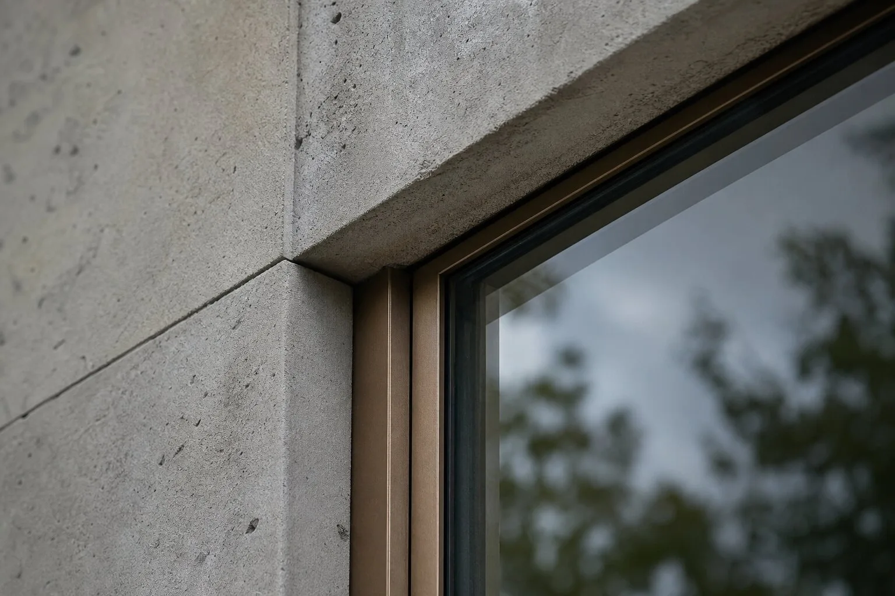
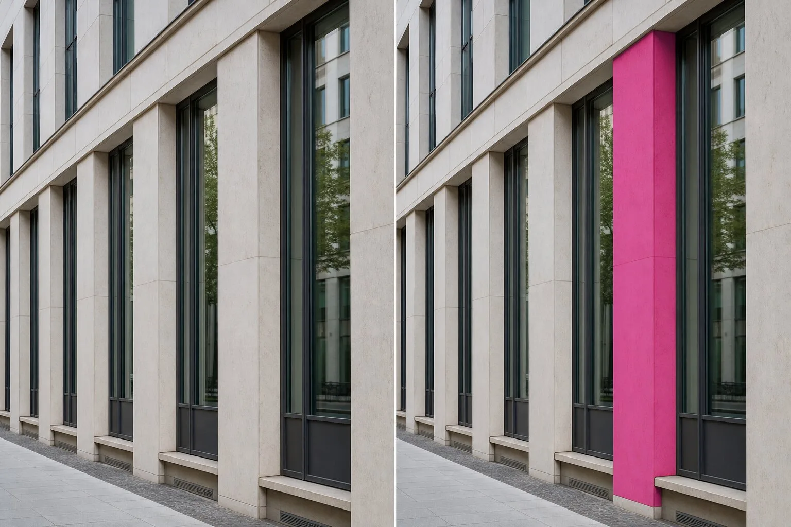

Can architects trust Veras Smart Selection for local edits?
Veras Smart Selection can make local render edits much faster, but its selection is an AI interpretation rather than a BIM-derived object ID. Inspect boundaries, test repeated elements and compare the result with the source. Use it for controlled image editing, not as evidence that the underlying model changed correctly.
A click lands on a brick wall. Veras highlights the brick, the return around the window and, perhaps, a thin slice of the bronze frame. That last sliver is where the feature stops being magic and becomes work.
Chaos released Smart Selection in Veras 4.5 with object, material, category and custom-prompt selection. The vendor says those maps can drive Modify and Replace operations without a mask brush. It is exactly the sort of improvement architectural visualizers have wanted: less tracing, fewer clumsy polygons, more time spent on the actual correction.
The catch is simple. A semantic selection is a prediction about pixels. It is not an object ID exported from Revit, Rhino or SketchUp. Treating the two as equivalent invites the image to redraw the building while everyone admires the shortcut.
What did Veras 4.5 actually add?
The Veras 4.5 release post describes selection by category, object or material, plus a custom prompt for targets outside those routes. Holding Alt can select every instance of an object class or material. Recent prompts are saved with thumbnails, while custom selection maps are generated in parallel, cached and restored from the cloud when a user changes renders or returns from the gallery.
Chaos says the feature works in the web app and across its Revit, Rhino, SketchUp, Vectorworks, Archicad, Enscape and Forma integrations. That reach matters. A useful edit tool should not demand that every frame take a detour through a separate painting application.
The same release added Remove Background, which produces a transparent PNG from a source image, and share links for gallery items. Those are sensible production conveniences. Smart Selection is the bigger architectural question because it decides what the edit is allowed to touch.
Smart Selection is not a BIM selection set
In a BIM application, selecting a curtain-wall panel identifies a modeled element with properties, relationships and a persistent identity. In an image, selecting “glass” asks a vision model to group pixels that look like glass. Reflections, shadows, mullions and objects behind glazing make that grouping ambiguous.
The distinction is easy to forget because the interface makes both actions feel like pointing. The information underneath is different. Our guide to what BIM integration actually means separates access to a viewport from access to model data. Smart Selection is powerful precisely because it can work on a flat render, but that power should not be mislabelled as model knowledge.
Chaos staff also stated in the release discussion that Veras used “Vision Banana” rather than SAM for this feature. That is a vendor statement about implementation, not an independent accuracy result. More revealingly, the same discussion said export of a colour segmentation map was not available at that time. A selection can be useful inside Veras while remaining awkward to inspect or reuse elsewhere.

How should a selection mask be audited?
Begin with the boundary, not the centre. The middle of a concrete wall is easy. The difficult pixels sit where concrete meets sky, glass, planting, a handrail or another concrete surface at a different depth.
Run one deliberately unfriendly frame before trusting the tool on a deadline. Choose a view with thin mullions, repeated bays, reflected materials and partial occlusion. Make a material selection, an object selection and a custom-prompt selection on the same target. Do not modify anything yet. The purpose is to learn how the selection behaves.
| Check | Look for | Why it matters |
|---|---|---|
| Silhouette | Halos, clipped corners, sky included | Edge errors become obvious after colour or material changes |
| Openings | Glass, reveals or frames grouped with wall | The edit can flatten construction depth |
| Repetition | Missed or extra instances after Alt selection | A facade becomes inconsistent in one click |
| Reflection | Reflected material selected as physical material | Appearance and object identity are not the same |
| Occlusion | Planting or people absorbed into the target | Entourage can be quietly repainted |
Then apply a loud diagnostic edit, such as an implausible magenta finish. Subtle changes hide leakage. Compare the modified image with the original using a difference view or rapid toggle. Our intervention ledger provides the right record: what was selected, what changed, how long repair took and whether the output remained usable.
One-click repeated selection deserves two checks
Selecting every instance sounds ideal for brick, glazing or seating. It can also spread one classification error across the frame. Repetition in architecture is rarely as visually uniform as its specification. Sun and shade split one material into different appearances. Weathering, reflections and depth make identical components look unrelated. Different objects can look identical from a distance.
First count expected instances before using Alt selection. Then count the visible selection islands. A mismatch does not always mean failure because some elements may be hidden, but it forces the right question before the edit becomes expensive.
Second, inspect one instance in bright light and one in shadow. If the tool only captures the well-lit version, the resulting material change will acquire a curious planning rule: renovation permitted on the sunny elevation only.
When is a semantic mask good enough?
Acceptance depends on consequence. A loose planting selection in an early atmosphere study may be harmless. A leaking mask around an approved entrance, accessibility rail or facade module is not. Use the AI render error budget to set that tolerance before editing.
For concept work, the selection is good enough when the changed region reads cleanly at review size and no protected element moves. For a client presentation, inspect at delivery resolution and retain the original beside the edit. For a specification or approval image, return to the source model when the proposed change represents a real design decision.
Remove Background needs the same discipline. Transparent PNG export is convenient for boards and mockups, but glass, fine planting, mesh and motion blur expose weak cutouts quickly. Check the alpha edge against both light and dark backgrounds. A white fringe can disappear on the canvas and announce itself in the deck.

What should the handoff record say?
Record the Veras version, source image name, selection route, custom prompt if used, edit instruction and exported filename. Keep the unmodified source. If Smart Selection changes between versions, that small record distinguishes a new model behaviour from a colleague's different clicking.
Do not write “wall material changed” when only the visualization changed. Write “wall appearance edited in Veras; BIM material unchanged.” This is not bureaucratic fuss. It prevents an image operation from impersonating a design update.
The saved-prompt feature makes consistent reruns easier, but a repeated prompt is not a persistent object reference. Recheck it on every camera. The multi-angle consistency test is useful here: edit the same target from two fixed views, then compare scope, colour and adjacent geometry.
Veras removed the brush, not the responsibility
Smart Selection is a good product decision. Mask painting is slow, dull and surprisingly easy to botch. Letting a vision model make the first selection is an obvious improvement, especially inside the application already holding the render.
The mistake would be measuring success only by clicks saved. Measure selection repair, protected-element drift and whether the edit can be explained later. If the mask is clean, proceed. If it is close, repair it. If the selection crosses a consequential boundary, return to a source-derived pass or the model.
One click can find the wall. It cannot decide what the wall is allowed to become.
Evidence note: sources checked 10 October 2026 include the official EvolveLAB Veras 4.5 release post and its staff replies. Feature availability and implementation descriptions are attributed to the vendor. This article reports no ArchiGen hands-on test and makes no independent accuracy claim.